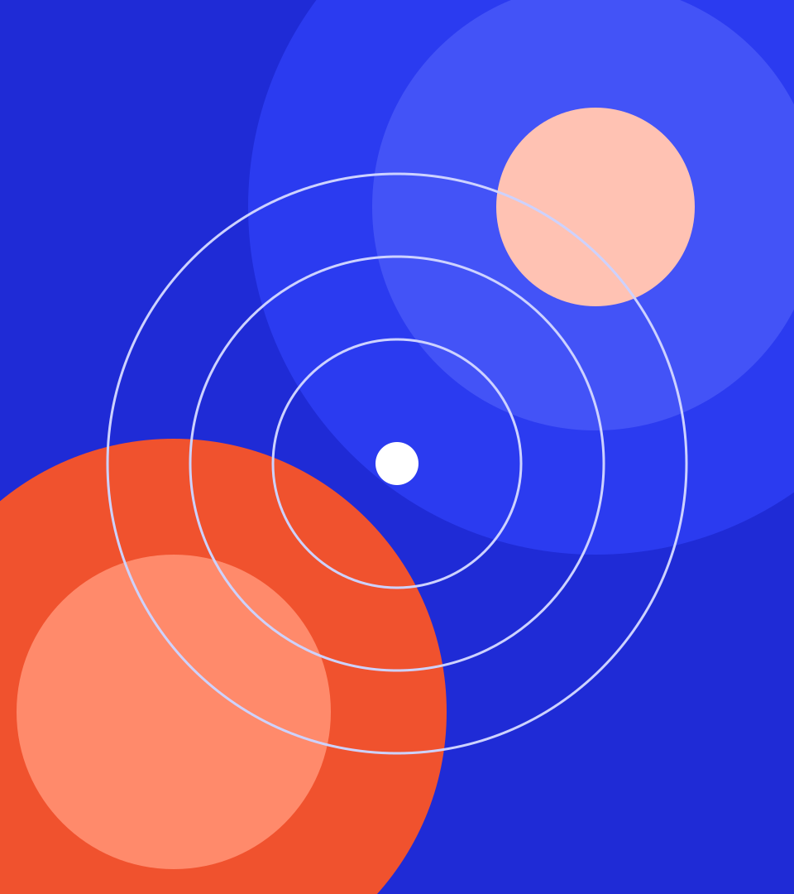

Presenter window
Press S for a second window with the current slide, the next one, your notes and a timer.
DynamicDecks starter
One example of every layout your agent can build a deck from.
How it works
1
Ordinary slides pick a layout and supply the words.
Layouts
15
ready-made layouts, and a blank canvas when none of them fits.
Title, section, bullets, two-column, big number, stats, cards, chart, image, quote, diagram, table, timeline, closing and full-bleed.
Press S for a second window with the current slide, the next one, your notes and a timer.
Arrow keys, space, Page Up and Page Down all work, in either window.
Press P to save the slides as a PDF, or Shift and P for slides with notes.
Charts
Label the lines directly, and say what the reader should see.
A legend is still there for two or more series, so color never carries the meaning alone.
Images
Reference a local image and the build compresses it and places it inside the deck.
Set data-image-side="left" to put the picture on the other side.

Constrain the ingredients, not the composition.
The design rule behind this deck Every slide may look different. All of them use the same values.
| HTML deck | PowerPoint file | |
|---|---|---|
| Opens with | Any desktop browser | PowerPoint or Keynote |
| Custom animation and diagrams | Anything the web can draw | The built-in effects |
| Restyle a finished deck | Swap the theme and rebuild | Reapply a template, then fix by hand |
| Edit by clicking into a slide | No, ask your agent | Yes |
2
When no layout fits, a slide can hold anything.
Motion
Also available: drop, from-right, zoom, grow-up and grow-right for bars, draw for SVG lines, travel along a path, data-count for numbers and data-type for typed text.
Custom slide
This wave is drawn by a script that belongs to this slide only. It starts when the slide appears, stops when you leave, and prints as a still frame.
No title position, no margins, no footer. The whole stage is yours.
Four things to try next.